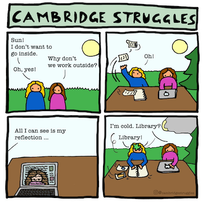
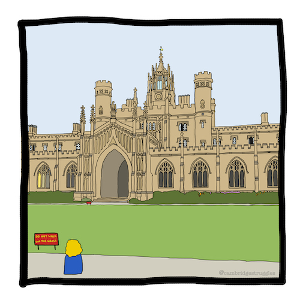
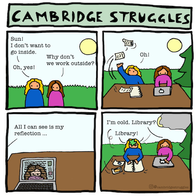
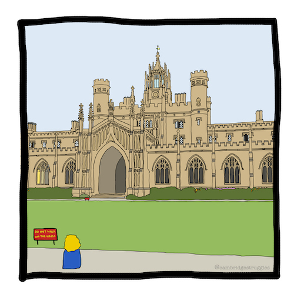
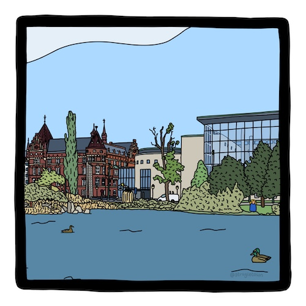
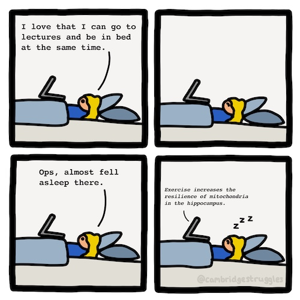
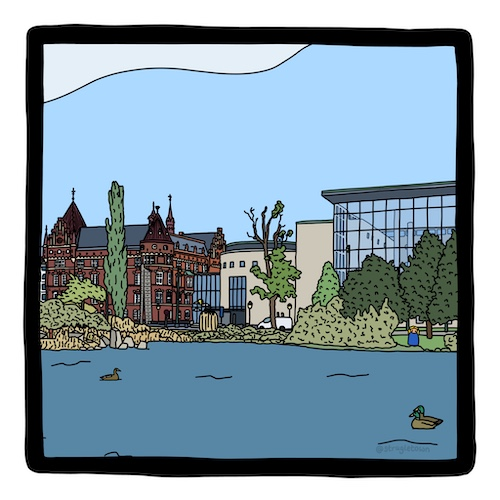
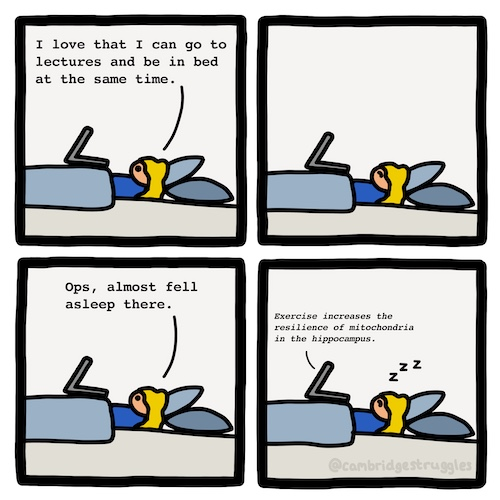

 



Hi! I am Anna, the creator of Strugle. This is the history behind Strugle.
At the time I was studying at University of Cambridge and was about to break in my brand new paper blanks diary that I had been gifted as a Christmas present. As I was writing about my day I found myself complaining a lot about small things. The next day I wrote about studying the same topics and having the same problems, for example, spending too much time procrastinating. One day I found that I was about to write about these small Cambridge struggles yet again and decided to draw them instead of writing. I liked drawing about my day in this comic style. Soon I had drawn about two or three typical student struggles. I showed my friends who enjoyed them and they pushed me to put them on Instagram for them to follow.
The account @cambridgestruggles was created! For each struggle that I had as a student it could be turned into something positive by creating a cartoon which people relate to. As more people found my page I started getting positive comments saying that they were happy that to see that they were not alone struggling as students. The community that was forming inspired me to do more.
When I felt the most stressed about my studies I would always find joy and calm for observing my surroundings. Cambridge is a beautiful city with stunning arcitecture. I wanted to portray this aspect of Cambridge in my comics and decided to draw one iconic building of each college. These were enjoyed by students at the colleges.